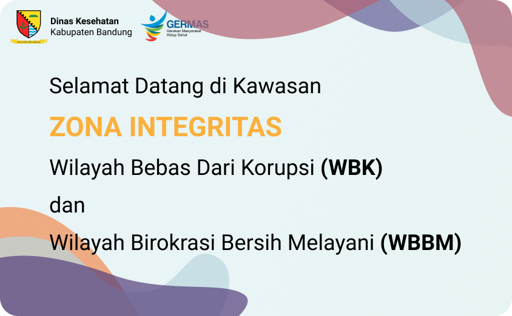

Pelayanan Publik Kategori Sarana
Izin Penyelenggaraan Pengendalian Vektor dan Binatang
Pembawa Penyakit
Izin HATRA (PMK no.61 tahun 2016)
Izin HATRA (PMK no.61 tahun 2016)
Sertifikat Laik Higiene Sanitasi Hotel
Sertifikat Laik Higiene Rumah Makan dan Restoran
Sertifikat Laik Higiene Sanitasi Kolam Renang dan Pemandian Umum
Sertifikat Laik Higiene Sanitasi Depot Air Minum
Sertifikat Laik Higiene Sanitasi Jasa Boga
Rekomendasi Teknis SIO Klinik
Rekomendasi Teknis SIO Laboratorium (PMK No. 411 tahun 2010)
Izin Tukang Gigi (PMK No. 39 tahun 2014)
Izin SPA (PMK No.8 tahun 2014)
Sertifikat Laik Higiene Rumah Makan dan Restoran
Sertifikat Laik Higiene Sanitasi Kolam Renang dan Pemandian Umum
Sertifikat Laik Higiene Sanitasi Depot Air Minum
Sertifikat Laik Higiene Sanitasi Jasa Boga
Rekomendasi Teknis SIO Klinik
Rekomendasi Teknis SIO Laboratorium (PMK No. 411 tahun 2010)
Izin Tukang Gigi (PMK No. 39 tahun 2014)
Izin SPA (PMK No.8 tahun 2014)